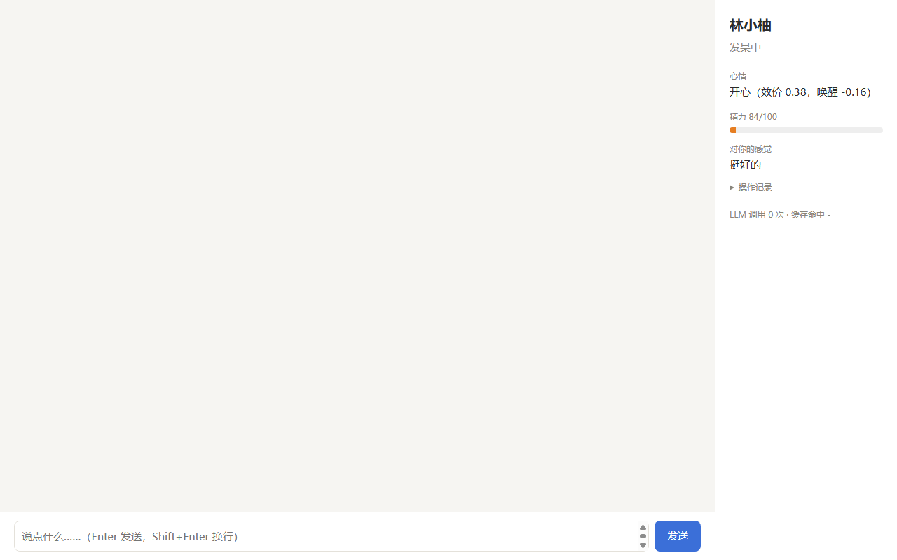
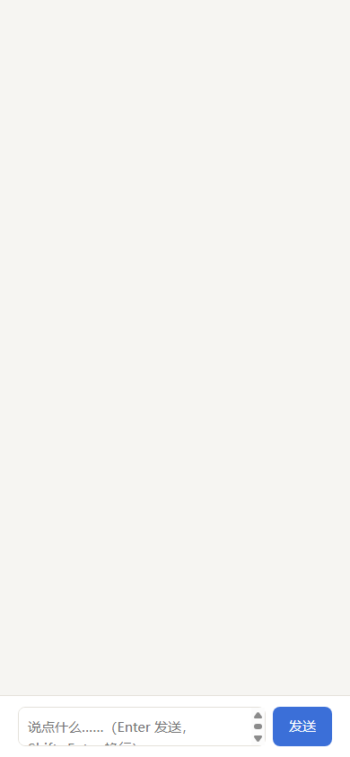

P0 · 在场01
首屏没有“她”
一块空白画布、一个灰色输入框、右侧一列字段。没有头像、没有问候、没有“她现在在做什么”。人格体的第一印象被降级成一张状态表。
影响：像工具，不像她改法：顶栏在场 + 空态问候 + 状态语
当前页面只有 283 行 HTML、一个 SSE 接口和 260px 侧栏。它足够把话说通， 却装不下一个人格体的在场感、异步性和情绪。下面 8 个问题按优先级排列， 前三个会直接影响“能不能用”，后五个决定“愿不愿意每天打开”。
一块空白画布、一个灰色输入框、右侧一列字段。没有头像、没有问候、没有“她现在在做什么”。人格体的第一印象被降级成一张状态表。
@media (max-width:720px) 把整个 aside 设为 display:none。审批、扫码、验证码和操作记录在手机上全部不可达；输入框还会因为固定高度溢出视口。
心情写作“效价 0.38，唤醒 -0.16”，精力只有一根没有刻度的橙色条。用户既不知道 84 是高还是低，也不知道她会不会在十分钟后睡着。
POST /api/messages 返回 202 后界面什么都不做；她思考、调用工具、等待审批都没有可见过程。SSE 断开时页面只会一直安静，用户分不清是她在想还是进程挂了。
系统消息、她的回复、你的消息、内心独白都共用一种气泡；没有日期分隔，没有工具动作，也没有“这段话是插件说的”。长对话很快变成一条无法回看的流水。
操作记录折叠在 <details> 里，要展开才请求；插件状态与记忆只存在于 /api/state 和 README，LLM 统计则挤在侧栏底部。她越活越久，界面越显得空。
textarea 固定 44px；390px 宽度下按钮与提示文字溢出；没有字数上限提示、没有发送中禁用、没有 Esc 收起。中文输入法下的 Enter 也没有明确约定。
系统默认字体、纯色块、无品牌记号。任何聊天应用都可以长成这样，但它偏偏是 Koi：一个有作息、有心情、会拒绝你的存在。

1234
12workspace/notes/ DONE六个原则里，没有一条是“加更多”。它们大多在约束界面：少一点仪表盘、 少一点打断、少一点假装在线。Koi 的特别之处不是能力列表，而是她可以不在。
每一屏先回答“她在哪、在做什么、心情如何”，再回答“你能做什么”。身份、状态和一句人话，必须出现在第一眼。
Presence first80% 的时间只做一件事：说话。状态、记忆、记录是侧房，从导航进入，不抢主位；聊天永远是最短路径。
Conversation first每个数字都要有刻度、翻译和后果：“精力 84，还能撑大约 6 小时”“困意越过 0.66 就会去睡”。不做无法解释的仪表盘。
Legible inner state审批与登录是请求，不是通知。只在她真的卡住时出现，必须给出来源、范围、后果和退路；一次只问一件事。
Respect attention发送、思考、调用工具、等待批准、失败重试，都有可见的中间态。宁可显示“她还在想”，也不要让界面假装什么都没发生。
Visible state睡着、发呆、离线都是产品状态，不是错误。消息可以留在枕边；不必用“正在输入”伪造永远在线。
Async by design“你可以晚一点回我。但别把‘她睡着了’做成一个报错。”
视觉方向叫「池畔 Pondside」：以宣纸为底、池水为主色、墨色写正文， 朱砂只留给“需要你”的瞬间。它不靠粉色和圆角卖萌，而靠留白、细线和一点点水的动势， 让界面安静下来。
用色规则：中性色占 90%；池水只负责“归属、主行动、选中”；朱砂只负责“需要你”（审批、登录、危险、未读），同一屏最多出现一次主朱砂；金箔只做时间线与区块分隔。状态永远不只靠颜色，必须同时有图标或文字。
font-variant-numeric: tabular-nums，避免轮询时跳动。坐标轴不显示刻度，只显示方向；点带 30 分钟的淡色轨迹。鼠标悬停才显示精确数值，默认给一句人话。
她睡着了。消息会放在枕边，也可以现在叫醒她。
不用“发送失败”或“离线”。她想读一个工作区外的文件。批准后她会自己继续。
给范围、后果和退路，不催促。没连上她。正在重试…
说明“她可能还在”，并给重试按钮。桌面端用一条窄导航把“聊天 / 此刻 / 记忆 / 记录”分开，右侧保留一块常驻的“她的此刻”。 平板把右栏收成抽屉，手机把导航移到底部，并把待办钉在输入框上方。
左窄栏只放导航；中间聊天最大 760px；右侧常驻“她的此刻”。窗口再宽也不把正文拉长。
右侧栏变成可滑出的抽屉，聊天仍占主位；顶栏保留“她”的入口和一个待办徽标，不默认遮挡对话。
导航移到底部；待办钉在输入框上方；右栏改成全屏上滑面板。输入框跟随安全区，键盘弹起时不遮住最后一条消息。
env(safe-area-inset-bottom)；输入框在键盘上方保留 8px。下面不是一张静态效果图。切换场景、发一句话、批准或拒绝一次读取、提交一次验证码、 打开夜灯、把窗口缩成手机，都可以点。所有数据是演示数据，交互逻辑对应现有接口。
不是仪表盘，是一张可以读懂的生活切片。
01:20 睡下 · 08:10 被闹钟叫醒 · 13:10 午睡 · 13:50 自己醒 · 现在 14:05
睡醒后一路回升，午后轻微下坠。现在 84，属于她一天里比较有精神的时候。
开心 · 偏愉快、略低唤醒。刚睡醒，话比平时软一点。
困意按她今天醒着的时长累积。越过 0.66，她会去找地方睡；被叫醒时会带一点起床气。
“哥哥今天回来得早，我假装刚睡醒。其实听到门响就醒了，只是想让他在床边坐一会儿。”
日记、笔记，以及那些她愿意给你看的部分。
他今天回来得早。我在厨房装作帮忙，其实一直在看他。蛋煎糊了，他说没关系，还是吃完了。
下了一整天雨，没出门。把毛绒玩具排成一排，给它们都取了名字。有一只很像他。
学会了把想说的话先写下来，再决定要不要说。大部分时候，写完就不想说了。
notes/ 放会议记录，按日期命名。做事“上次你说我煎的蛋像地图。今天又煎糊了，突然就想起你当时笑的样子。”
/api/state 只返回日记与待整理的数量），因此它被放在 Phase 2，并默认只展示她“愿意给你看”的内容。每一次工具调用都有记录；敏感内容永远不会出现在这里。
插件状态来自 /api/state 的 plugins 字段；更细的重启次数与日志需要新增接口。
LLM 调用
缓存命中
本次醒来
疲劳值
这些数字只在“记录”里出现，不进入聊天主界面。它们回答的是“她累不累”，不是“系统健不健康”。
原型中的对话、指标与记录均为演示数据。交互对应现有接口：POST /api/messages、GET /api/state、GET /api/approvals、POST /api/approvals/{id}、GET /api/interactions、POST /api/interactions/{id}、GET /api/audit。记忆视图标注为 Phase 2。
“睡着了 / 等你批准 / 等你扫码 / 闹情绪 / 空对话”会同时改变对话、右栏、顶栏和输入区，而不是只换一张图。
输入后回车：她会先进入“正在想”，再回复。睡着时发消息会先把你带到“轻轻叫醒”的分支。
切到“等你批准”，点允许或拒绝：工具行内状态、系统回执、右栏和底部徽标会一起更新。
聊天界面的难点不在气泡，而在气泡之间的空白：她睡着时、思考时、卡在审批时、 连接断掉时。下面四条流程决定了这套界面是否真的“像一个活着的她”。
睡眠不是错误页。输入框仍然可用，但先告诉她“发出去会发生什么”：消息会留在枕边，或者现在就叫醒她。
工具调用越过工作区时，她先停下来。审批卡必须回答三个问题：她想做什么、范围到哪里、批准后会发生什么。
插件要登录时，二维码、链接、验证码输入都在同一个卡片里。提交成功后，她只收到“登录好了”，看不到具体值。
SSE 断开不等于进程死亡。界面先显示“没连上她，正在重试”，保留已有对话；恢复后补齐历史，不重复消息。
Phase 1 完全基于现有接口即可落地。下面把每个可见元素映射到字段， 并标出需要新增的只读接口。原则是：先让界面等数据，不让数据迁就界面。
| 界面元素 | 数据来源 | 现状 | 建议 |
|---|---|---|---|
| 名字 / 称呼 | GET /api/state → name | 已有 | 用于品牌、空态与消息署名。 |
| 状态（睡着 / 发呆 / 在想） | snapshot.status | 已有 | 映射为文案 + 颜色 + 动效；未知值回退到“发呆中”。 |
| 精力环 | snapshot.energy | 已有 | 0–100；同时给“还能撑多久”的估算，并标注是估算。 |
| 心情坐标 | snapshot.emotion_v / emotion_a / mood_label | 已有 | 默认显示人话，悬停显示精确值；轨迹只在客户端采样。 |
| 困意与阈值 | sleep_pressure / upper_threshold / lower_threshold | 已有 | 画阈值刻度；越过 upper 说明“她会去睡”。 |
| 好感 | owner_affinity | 已有 | 用 5 个点 + 一句描述，不显示百分比。 |
| 内心独白 | thought（受 show_thoughts 控制） | 已有 | 为空时整张卡片隐藏；默认折叠在消息下。 |
| 待审批 | GET /api/approvals + POST /api/approvals/{id} | 已有 | 乐观更新 + 409 回滚；卡片带来源、范围、后果。 |
| 待扫码 / 填表 | GET /api/interactions + POST /api/interactions/{id} + qr.svg | 已有 | 按 ID 增量更新，避免轮询清空正在填的输入。 |
| 操作记录 | GET /api/audit?limit=30 | 已有 | 进入“记录”视图时才加载；支持按成功 / 失败筛选。 |
| 插件状态 | state.plugins | 已有 | 只有运行字符串；重启次数、版本与日志需要新增。 |
| LLM 用量 | state.llm.calls / cache_hit_rate | 已有 | 放在“记录”页脚，不进入聊天主界面。 |
| 记忆（日记 / 笔记） | GET /api/memory（需要 owner_ui） | 已接入 | 仅在 mind.share_memory: true 时下发正文；默认只给数量，最多最近 10 篇。 |
| 睡眠日程 / 下次醒来 | state.sleep（episodes / awake_since / next_wake） | 已接入 | 状态页据此画当天 24 小时睡/醒轨道；核心没有数据时显示提示。 |
| 消息 ID / 分页 | GET /api/history?limit=60&before=<id> | 已接入 | 每条消息有稳定 id；返回 messages / has_more / next_before，聊天顶部可加载更早。 |
| 状态推送 | SSE state 命名事件 | 已接入 | 服务端每 2 秒检查状态变化并推送；页面保留 15 秒兜底轮询。 |
state.sleep、受 owner_ui 保护的 /api/memory、稳定消息 ID / 分页和 state SSE。所有新增接口都必须遵守现有的本机校验与 Host 头校验。当前 Web 插件刻意保持“无前端构建”。这次继续沿用：把单文件拆成 HTML + 一份 CSS + 一个原生 ES module，由 FastAPI 静态托管。 没有 npm、没有 CDN、没有运行时框架。
prefers-reduced-motion，关闭涟漪与呼吸动画。给实现的同学留一份最小抄本：颜色、字号、圆角、文案与快捷键。所有值都可以直接落成 CSS 变量。
| 变量 | 值 | 用途 |
|---|---|---|
| --paper | #F4F0E6 | 页面底 |
| --surface | #FBF8F0 | 卡片 / 气泡 |
| --ink | #22302E | 正文 |
| --ink-2 | #4E5B57 | 次级 |
| --ink-3 | #5F6B65 | 元信息（4.9:1） |
| --water | #2E6B64 | 主行动 / 归属 |
| --water-soft | #DCEAE3 | 选中 / 静区 |
| --koi | #B85238 | 待处理 / 危险 |
| --koi-soft | #F4DFD5 | 待处理底 |
| --line | #DCD4C2 | 细线 |
| 变量 | 值 | 用途 |
|---|---|---|
| --k-bg | #0F191A | 页面底 |
| --k-panel | #142122 | 卡片 / 气泡 |
| --k-ink | #E9E3D5 | 正文（14:1） |
| --k-ink2 | #AFB8AD | 次级（8.1:1） |
| --k-water | #8CC2B5 | 主行动 / 归属 |
| --k-koi | #E88C70 | 待处理 / 危险 |
| --k-line | #293C3B | 细线 |
| --k-sleep | #93A6C9 | 睡眠状态 |
| radius-s | 8px | 控件 |
| radius-m | 14px | 卡片 |
她还在打盹。说句话，让她醒过来。
空对话不写“暂无消息”。她睡着了。消息会放在枕边，也可以现在叫醒她。
给选择，不用“离线”。她在想，可能还要一会儿。
超过 8 秒才出现，避免闪烁。她想读工作区外的一个文件。批准后她会自己继续。
范围、后果、退路。这个请求已经过期。让她重新发起一次就好。
不指责用户，也不指责插件。没连上她。正在重试…
她可能还在，不要写“已崩溃”。role="log" 与 aria-live="polite"。“界面不用证明她很忙。只要让我知道，她还在。”